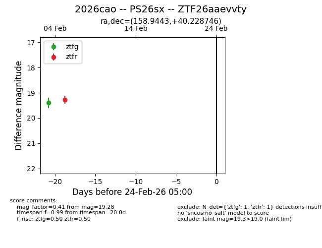
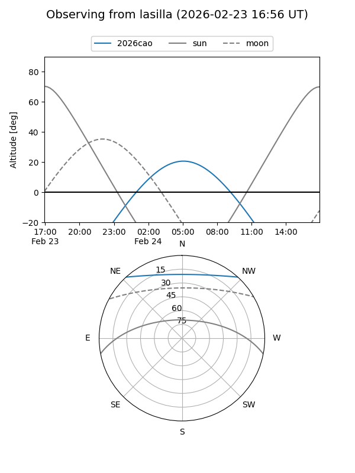
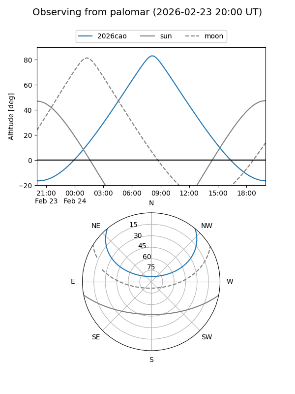

2026cao
Target 2026cao at 2026-02-24 09:08
Aliases and brokers:
FINK: link
Lasair: link
ALeRCE: link
TNS: link
YSE: link
alt names
ZTF26aaevvty (ztf,fink_ztf)
2026cao (tns,yse)
PS26sx (panstarrs)
Coordinates:
equatorial (ra, dec) = 158.9443,+40.22875
equatorial (HMS+DMS) = 10:35:46.63,+40:13:43.48
galactic (l, b) = (179.0657,+59.13407)
Flags:
Photometry:
last ztfg=19.40, ztfr=19.28
1 ztfg, 1 ztfr detections
Lightcurve

Visibility


Additional plots